Mumbai (Bombay)
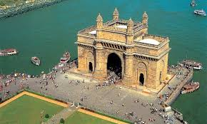
- Gateway of India
- Elephanta Caves
- Haji Ali Dargah
- Chhatrapati Shivaji Maharaj Terminus (Victoria Terminus)
- Marine Drive
- Juhu Beach
- Siddhivinayak Temple
- Sanjay Gandhi National Park
- Film City
Pune (Poona)
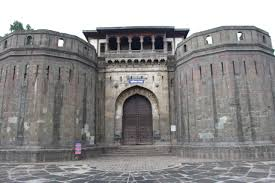
- Shaniwar Wada
- Aga Khan Palace
- Sinhagad Fort
- Dagadusheth Halwai Ganapati Temple
- Raja Dinkar Kelkar Museum
- Osho Ashram (Osho International Meditation Resort)
Aurangabad
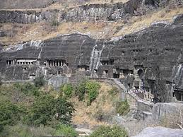
- Ajanta Caves (UNESCO World Heritage Site)
- Ellora Caves (UNESCO World Heritage Site)
- Bibi Ka Maqbara
- Daulatabad Fort
Nasik (Nashik)
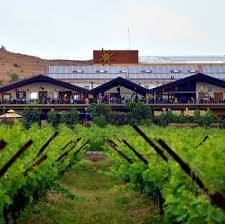
- Trimbakeshwar Temple
- Sula Vineyards
- Pandavleni Caves
- Saptashrungi Devi Temple
Mahabaleshwar
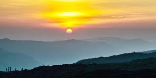
- Wilson Point (Sunrise Point)
- Arthur's Seat
- Venna Lake
- Pratapgarh Fort
Kolhapur
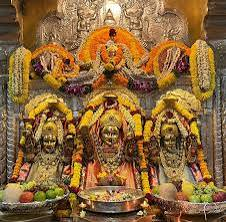
- Mahalakshmi Temple
- Rankala Lake
- New Palace Museum
- Panhala Fort
Nagpur
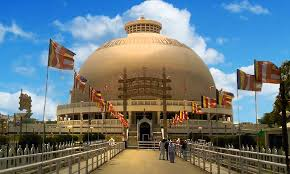
- Deekshabhoomi
- Ambazari Lake and Garden
- Maharajbagh Zoo
- Raman Science Centre
Ratnagiri
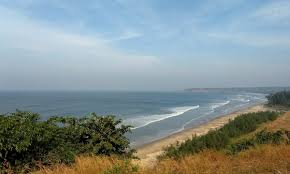
- Ratnadurg Fort
- Ganpatipule Beach and Temple
- Jaigad Fort
- Thibaw Palace
Satara
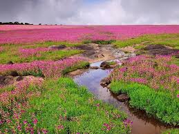
- Kaas Plateau (Valley of Flowers)
- Thoseghar Waterfalls
- Sajjangad
- Ajinkyatara Fort
Solapur
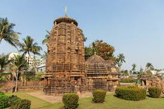
- Siddeshwar Temple
- Great Indian Bustard Sanctuary
- Bhuikot Fort
- Hipparga Lake
Lavasa
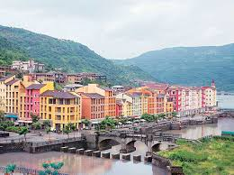
- Lavasa City
- Dasve Viewpoint
- Lakeside Promenade
- Temghar Dam
Alibaug
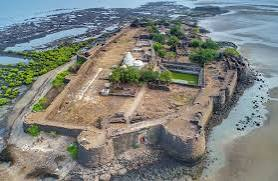
- Alibaug Beach
- Kanakeshwar Forest
- Kolaba Fort
- Kashid Beach
Other Notable Attractions
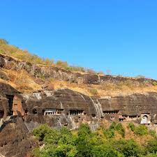
- Aurangabad Caves
- Pawna Lake
- Elephant's Head Point (Matheran)
- Bhimashankar Wildlife Sanctuary
Festivals and Cultural Events
- Ganesh Chaturthi in Mumbai
- Kala Ghoda Arts Festival in Mumbai
- Gudi Padwa (Maharashtrian New Year)
- Pune International Film Festival (PIFF)